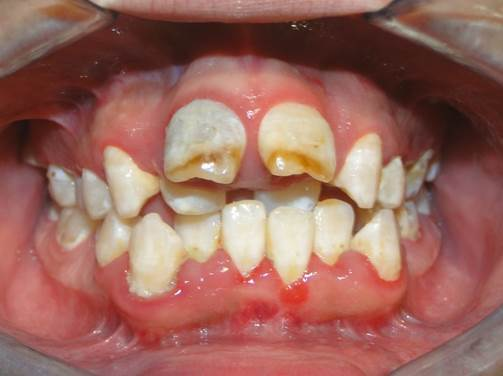
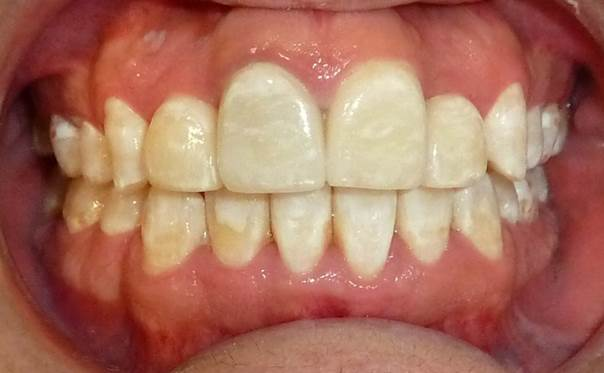

Vista dental


CASO CLÍNICO · ORTODONCIA
Caso clínico real de tratamiento de apiñamiento dental. La planificación de ortodoncia se realiza de forma individual de acuerdo con la posición de los dientes, la mordida y las necesidades de cada paciente.


TRATAMIENTO PERSONALIZADO
El tratamiento busca mejorar la posición de los dientes y su relación funcional. El plan y la duración dependen del diagnóstico, el grado de apiñamiento y las características particulares de cada paciente.
Las imágenes corresponden a un caso clínico real. Los resultados pueden variar según el diagnóstico, las condiciones clínicas y las necesidades de cada paciente.